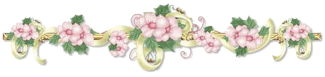

En este blog voy a dar tips y responderé algunas de tus frecuentes sobre el
cultivo y cuidado de plantas.

Como selecciono que plantas quiero/puedo poner en mi jardín?
Varios factores influyen en esta decisión, uno de ellos es la tierra o sustrato que tienes, si el ph es el
adecuado y que textura tiene la misma.
También la humedad del ambiente y la cantidad de horas de luz solar que diaria.
Hay plantas necesitan entornos climáticos específicos y condiciones adecuadas.
Tambien hay que tener en cuenta la época del año ya que algunas plantas crecen solo en algunas temporadas.
Sobre todas las cosas hay que darles atención, observarlas seguido y asegurarse que no les falte agua o luz solar.
Empecemos paso a paso con lo que tenes que saber!
Los pasos básicos en el crecimiento de una planta son: